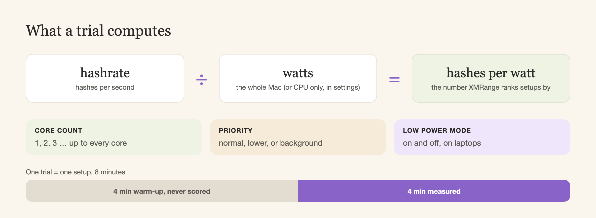
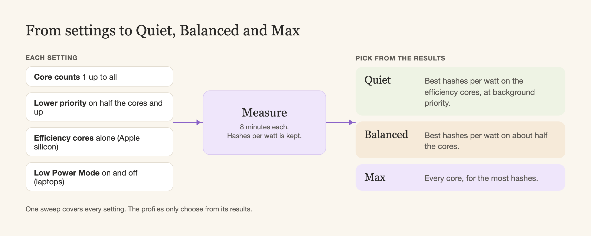

Trials and profiles
Every Mac is different. So XMRange measures yours.


Run trials
Open the tuning tab. The seeker card shows the button: start trials the first time, continue trials if you stopped part way, run trials again when all are done. If nothing is mining, it starts mining first. Close other apps first.
The card shows "trial N of M", the time left, and an estimate for the whole run. Expect a few hours on a Mac with many cores. You can pause, stop and later continue. Finished trials are kept. While trials run, your temperature and battery limits do not apply.
Low Power Mode on laptops
On a laptop, the trials also run with Low Power Mode on and off. XMRange cannot switch it for you, since that needs administrator rights. So it asks: "turn it on in battery settings", with skip and stop beside it.
The low power card on the machine tab opens a short guide: open battery settings, select Low Power Mode, choose Always or Only on Power Adapter. A "detected" tick shows once macOS reports it on. Needs macOS 12 or later; on a Mac without it, the cards are hidden.
The profiles
When trials exist, the profile card offers three pills, each with its h/w and setup. Before any trials the pills are off and the card says "run trials first". If you set cores by hand, it reads "manual · your own cores". The trials card lists every measured setup, best first. A row sets that setup directly.
Limits
Both live in settings and apply to normal mining.
- pause above: a CPU temperature in °F, from 100 to 230. Blank means off. Mining pauses after the CPU stays at or over it for 30 seconds, and resumes after it stays a little under for 60 seconds. The tape says "paused · over your temperature limit".
- mine on: battery too (the default) or adapter only. With adapter only, mining pauses on battery ("paused · on battery") and resumes when you plug in. Desktop Macs do not show this row.
If you press resume yourself during a limit pause, that overrides it until the condition clears.